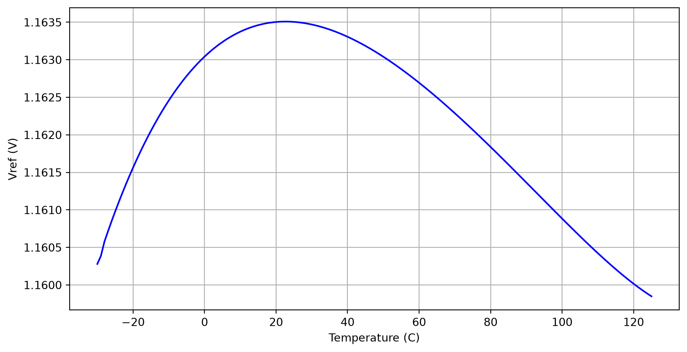
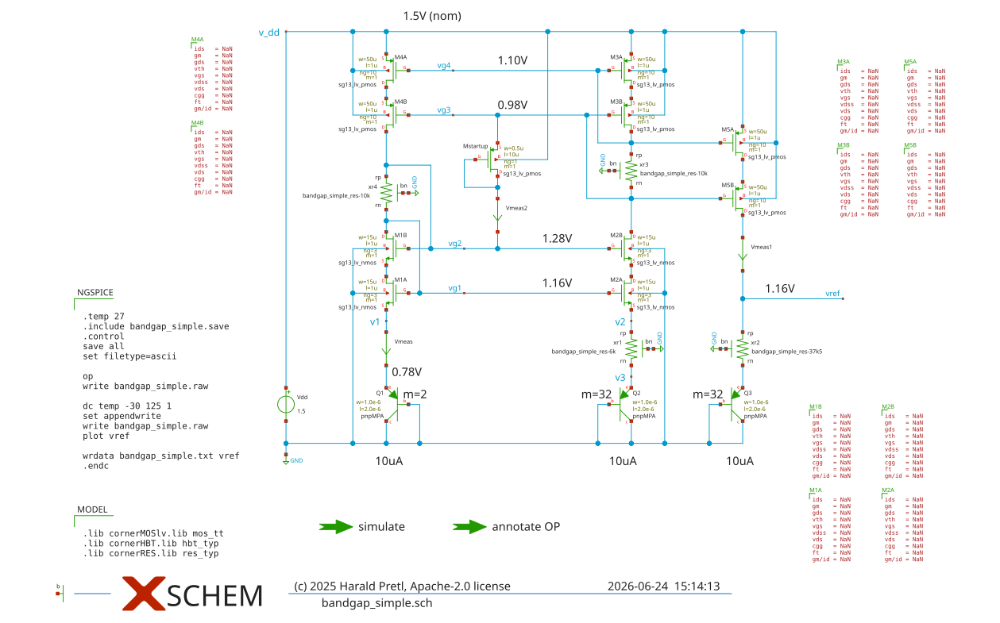
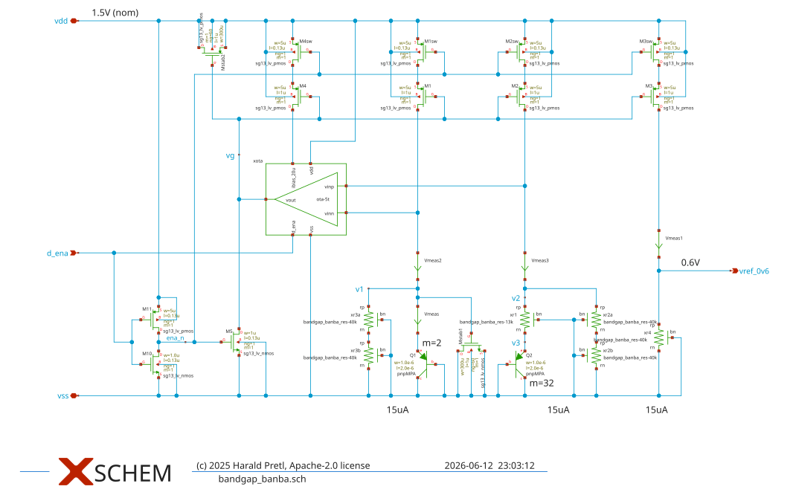
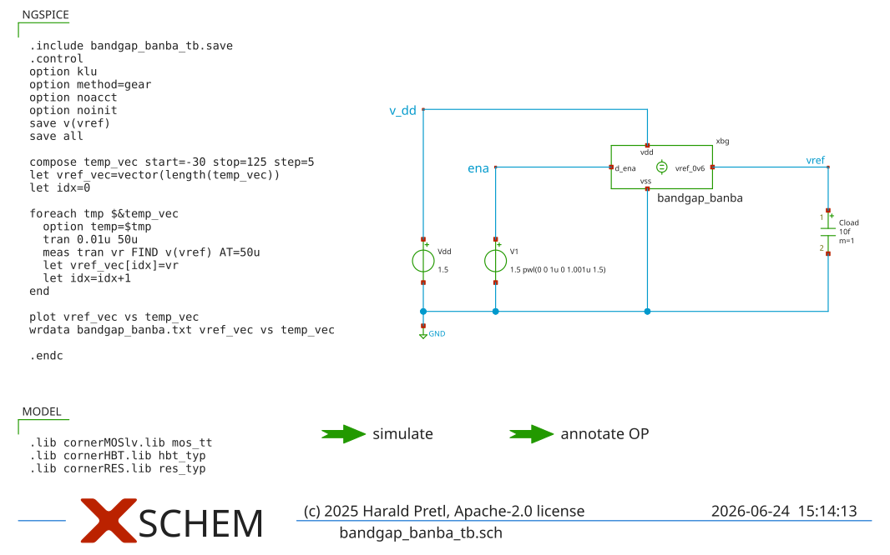
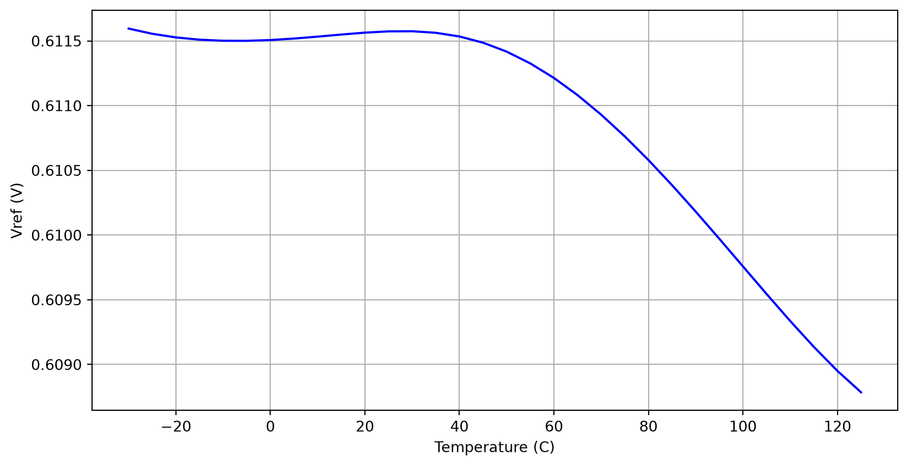

Analog (Integrated) Circuit Design
\[ I_\mathrm{bias} = \frac{V_\mathrm{ref}}{R_1}. \]
Figure 64: A constant-current generator based on OTA.
\[ V_\mathrm{bias} = R_2 I_\mathrm{bias} = \frac{R_2}{R_1} V_\mathrm{ref}. \]
\[ V_\mathrm{BE}\approx V_\mathrm{g0} \left( 1 - \frac{T}{T_0} \right) + V_\mathrm{BE0} \left( \frac{T}{T_0} \right) \tag{46}\]
\[ \Delta V_\mathrm{BE}= \frac{k T}{q} \ln \left( \frac{J_1}{J_2} \right) \tag{47}\]
\[ V_\mathrm{ref} = V_\mathrm{g0} \left( 1 - \frac{T}{T_0} \right) + V_\mathrm{BE0} \left( \frac{T}{T_0} \right) + K \frac{k T}{q} \ln \left( \frac{J_1}{J_2} \right) \tag{48}\]
\[ K \frac{k}{q} \ln \left( \frac{J_1}{J_2} \right) = \frac{V_\mathrm{g0} - V_\mathrm{BE0}}{T_0}. \tag{49}\]
\[ V_\mathrm{ref} = V_\mathrm{g0} \tag{50}\]
Figure 65: A simple bandgap reference.
\[ \Delta V_\mathrm{BE}= \frac{k T}{q} \ln m \]
\[ I_\mathrm{bias} = \frac{\Delta V_\mathrm{BE}}{R_1} = \frac{1}{R_1} \frac{k T}{q} \ln m. \tag{51}\]
\[ V_\mathrm{ref} = V_\mathrm{BE}+ \frac{R_2}{R_1} \frac{k T}{q} \ln m. \]
Improved Bandgap Reference
For an improved implementation of Figure 65, the current mirrors should be cascoded, and a startup circuit should be included to guarantee proper operation after enabling it. Further, Equation 46 and Equation 47 build on the relationship \(I_\mathrm{C} = f(V_\mathrm{BE})\), while we control \(I_\mathrm{E}\) in this circuit. If \(\beta\) is large then \(I_\mathrm{C} \approx I_\mathrm{E}\), but this is not the case for the used PNPs.
Many more different bandgap architectures exist, with the Kuijk (Kuijk 1973) or the Brokaw (Brokaw 1974) types being popular choices.

Figure 66: Simple bandgap reference circuit in Xschem.


Figure 68: Banba bandgap reference circuit in Xschem.

Figure 69: Banba bandgap testbench Xschem.

Exercise: Improved Low-Voltage Bandgap
As an optional exercise for advanced users: Design a bandgap circuit following (Razavi 2021). Implement the shown two-stage OTA and the regulated cascode.
As a starting point, the design of Section 12.2 can be used. As this design will contain more blocks, please build up a hierarchical design, with the OTAs designed in separate subcircuits.